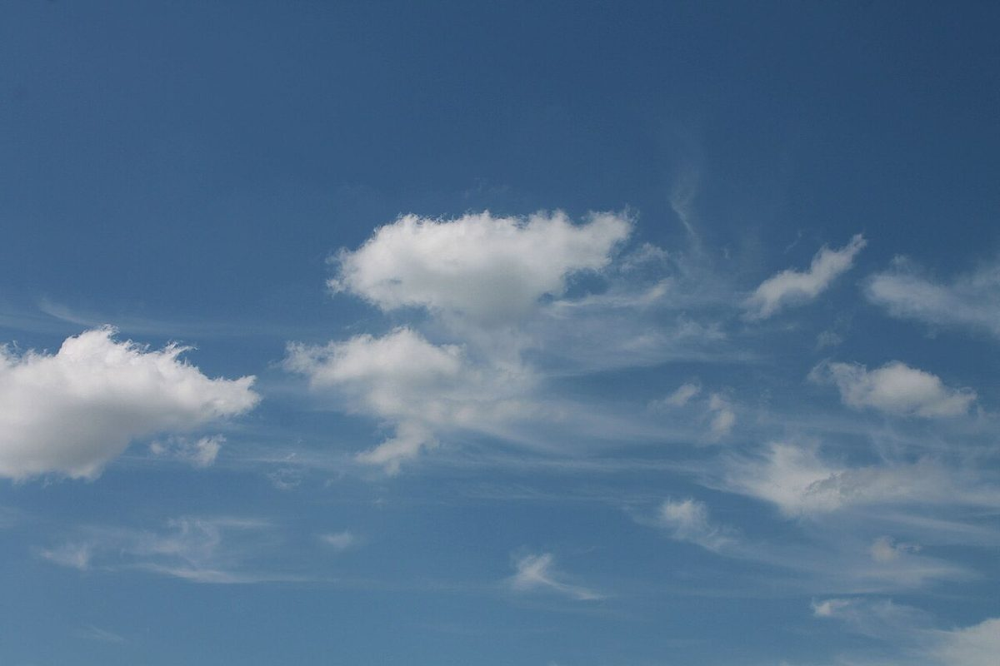

制作側の連想
屋号を、天気予報のように読んでみる
「雨ときどき月」という屋号から、制作側は天気予報の言い回しを連想しました。「くもりときどき晴れ」のように、天気が入れかわる予報の文です。由来は分かりません。このサイトのつくりは制作側の連想で、お店の理念・由来とは無関係です。
雨
雨のしずく(撮影地不明)
くもり晴れ間の雲(撮影地不明)

ときどき月
夜空(スウェーデン)
写真は雨・雲・夜空のイメージで、西条市の空ではありません(国外または撮影地不明のフリー素材)。
パン屋のイメージ
雨の日にも、ひとつ。

パン屋というと、焼き上がりの香りや、棚に並ぶ姿を思い浮かべます。ここにあるのは、そのイメージを伝えるための写真です。お店で実際に何を扱っているかは、まだ確認できていません。

確認できていること
分かっていることだけ
| 所在地 | 愛媛県西条市神拝甲甲201-10 |
|---|---|
| 電話 | なし |
| 営業時間 | 準備中 |
| 定休日 | 準備中 |
| ご予約 | 準備中 |
| 駐車場 | 準備中 |
| SNS | Instagram @ametokidokituki |